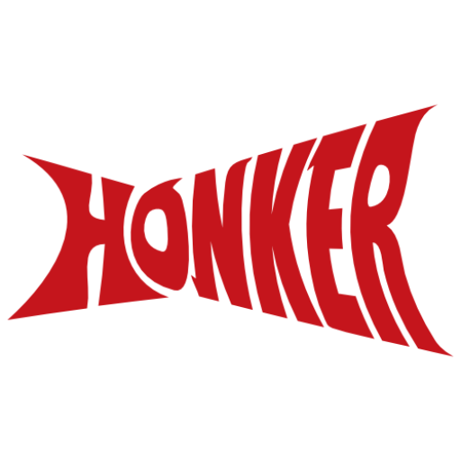

Honker Band from Binghamton

Bio
Honker is a high-energy funk-rock jam band from Binghamton, NY.
The three of us write and play groove-heavy originals with catchy hooks,
solid improvisation, and a whole lot of feel-good energy.
Our shows are sweaty, danceable, and always a little different —
we like to stretch out and let the music go where it wants.
Influenced by bands like moe., Phish, Zappa, and Rush, we mix tight songs with exploratory jams.
You can catch us at local spots like Atomic Tom’s, Abel’s Pub, and Studio 56, plus the occasional festival.
Current lineup:
Jim Lomonaco (Yolk, Caviar & Grits) – Bass & Vocals
Nate Calzetoni (Grateful Upstate Toodleloo) – Guitar & Vocals
Jeff Howard (Randy McStine Trio, Yolk, Grateful Upstate Toodleloo) – Drums & Vocals
Shows
Honker at Light Years Fermentation
Sat, Sep 26 @ 6:00PM
Light Years Fermentation, Endicott, NY
Honker at Liquid State
Fri, Oct 2 @ 7:00PM
Liquid State Brewing, Ithaca, NY
Honker at Abel’s Pub
Sat, Oct 10 @ 7:00PM
Abel’s Pub, Binghamton, NY
Honker at
Hootenanny at Maple Shade Farm
Sun, Oct 11 @ 3:00PM
Maple Shade Farm. 2066 Co Rd 18, Delhi, NY 13753
Honker Live Video
Contact Honker
Contact Us (form provided by MailChimp)
Honker Email List
Honker on Other Sites
